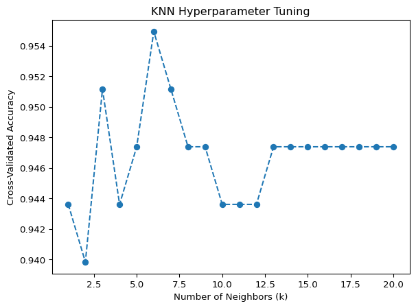

# CROSS VALIDATION ANALYSIS - k's tuning# Define range of k values to testk_values =range(1, 21) # Testing k from 1 to 20cv_scores = []# Perform cross-validation for each kfor k in k_values: knn = KNeighborsClassifier(n_neighbors=k) scores = cross_val_score(knn, X_train, y_train, cv=5, scoring='accuracy') # 5-fold CV cv_scores.append(np.mean(scores)) # Store mean accuracy# Find the best kbest_k = k_values[np.argmax(cv_scores)]best_accuracy =max(cv_scores)print(f"Best k: {best_k}")print(f"Best cross-validated accuracy: {best_accuracy:.4f}")# Optional: Plot the resultsplt.plot(k_values, cv_scores, marker='o', linestyle='dashed')plt.xlabel('Number of Neighbors (k)')plt.ylabel('Cross-Validated Accuracy')plt.title('KNN Hyperparameter Tuning')plt.show()
Best k: 6
Best cross-validated accuracy: 0.9549

# Use tuned hyperparameter k in full data # Train KNN with the best kbest_knn = KNeighborsClassifier(n_neighbors=best_k)best_knn.fit(X_train, y_train) # Fit on training data# Make predictions on test datay_pred = best_knn.predict(X_test)# Evaluate the modelprint("Accuracy:", accuracy_score(y_test, y_pred))print(classification_report(y_test, y_pred, target_names=label_encoder.classes_))